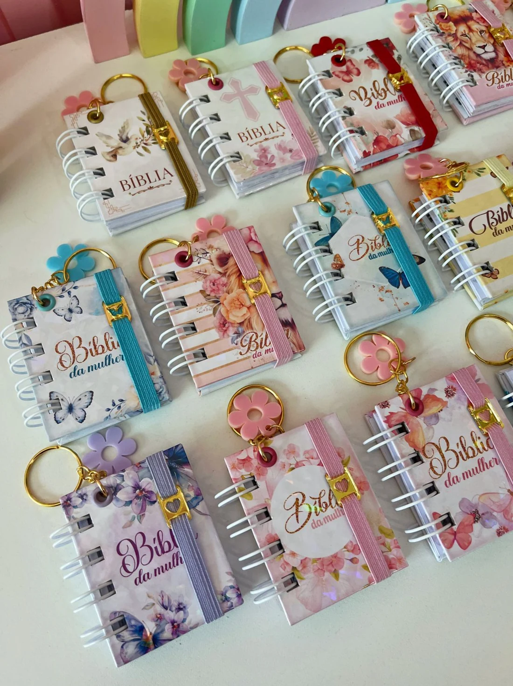
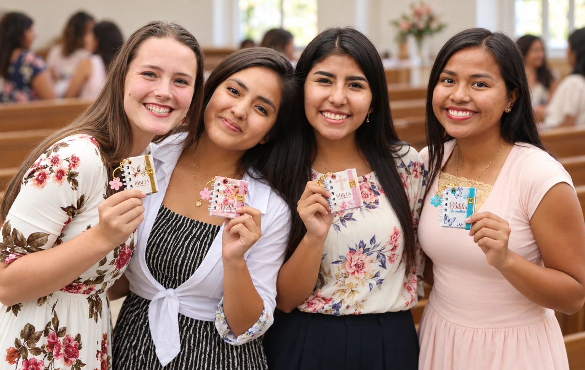
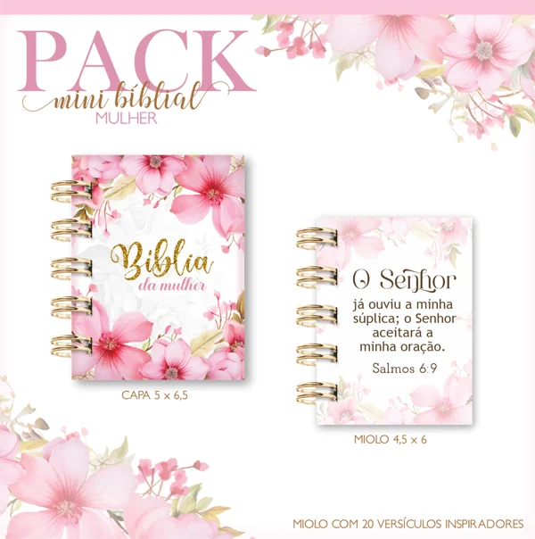
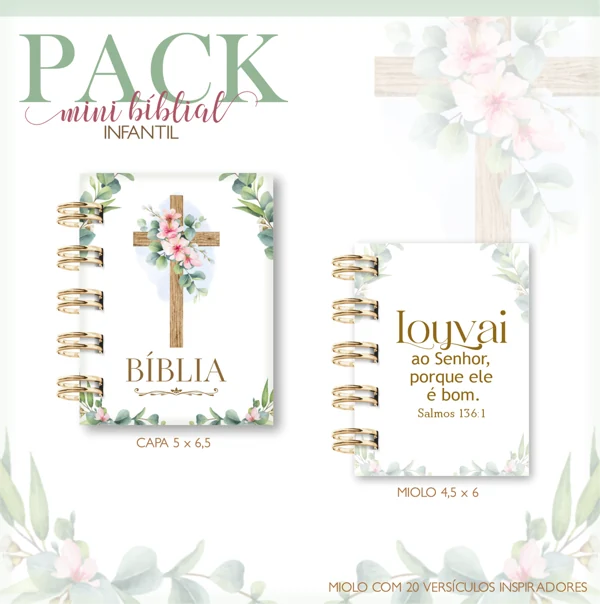
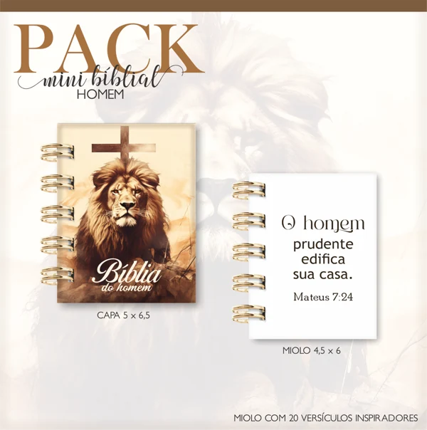

Presentes com nome
Acrescente o nome da pessoa e prepare um carinho só dela.
Artes prontinhas para imprimir, montar e vender, com 20 versículos em cada Mini Bíblia. Você acrescenta o nome desejado e capricha no acabamento.

Tem flores, cores delicadas e aquele detalhe que faz a gente se apaixonar. Escolha suas preferidas e dê o seu toque na montagem.
Peças montadas para você ver os detalhes de pertinho.
Flores, borboletas e cores delicadas. Olha alguns dos temas.
Capas delicadas para as lembranças das crianças.
Leões, cruzes e outras capas para oferecer mais opções.
Deslize ou use as setas para ver mais modelos. Toque nas imagens para ampliar.
O pack é digital: você recebe as artes para produzir seus mimos.
Escolher a cor, combinar os detalhes, ver a peça tomando forma… essa parte é uma delícia, né?
E quando as artes já estão prontas, sobra espaço para cuidar dessa parte que você ama: montar e deixar o mimo com a sua cara.
“Queria um mimo diferente para oferecer.”
“Uma lembrança com fé e o nome da pessoa ficaria tão linda…”
“Quero montar, mas a arte ainda não está pronta.”
Receba os arquivos do seu plano e escolha a arte que combina com o presente ou a encomenda.
Coloque o nome desejado, imprima, recorte e monte. Você escolhe os materiais e capricha no acabamento.
Prepare uma peça para presentear ou apresente as opções às suas clientes e combine as encomendas.
Você recebe as artes digitais.
A impressão, os materiais e a montagem das peças ficam por sua conta.
Além das capas, cada Mini Bíblia tem 20 versículos inspiradores no miolo. As páginas já vêm com as mensagens para você imprimir.
Um versículo, uma capa escolhida com carinho, o nome de alguém especial… olha quantos detalhes cabem nesse mini mimo!
O mesmo tema pode ganhar o seu acabamento e uma apresentação feita para a ocasião.
Acrescente o nome da pessoa e prepare um carinho só dela.
Ofereça opções para encontros religiosos, batizados e outras datas especiais.
Combine a peça com os acessórios escolhidos por você, como nas fotos.
Acessórios, ferragens, espirais e outros materiais físicos não fazem parte do pack.
Ela escolhe a capa, você acrescenta o nome e cuida dos detalhes. Uma lembrança pequenininha, feita para aquele encontro da igreja, para presentear uma amiga ou agradecer alguém querido.

É gostoso entregar uma peça e ver o carinho nos detalhes, né? As artes da Lina já vão prontinhas. O capricho da montagem tem o seu toque.
Quando essa pergunta chegar, mostre os temas, conte que dá para acrescentar o nome e combine os detalhes da encomenda. Com as fotos à mão, fica gostoso apresentar suas opções.
Oi! Você tem alguma lembrancinha para o encontro das mulheres da igreja?
Tenho sim, amor! Olha essas Mini Bíblias. Cada uma tem 20 versículos. ♡


Que delicadas! Dá para colocar o nome de cada uma?
Dá sim! Me conta qual tema você gostou e quantas precisa. A gente combina os nomes e o acabamento com carinho.
Amores, eu adoro ver os detalhes ganhando forma: as flores, as cores, o nome da pessoa… é tão gostoso pegar a peça prontinha e pensar “fui eu que fiz!”, né?
Neste pack, as artes já vão preparadas para você imprimir e montar suas Mini Bíblias. Escolha o tema que mais combina com a sua cliente e dê seu toque no acabamento.
Com carinho, Lina
Feedbacks e comentários sobre os materiais da Lina Criativa.
Materiais para mostrar os modelos às clientes e apresentar suas opções.
Um canal para tirar dúvidas sobre os arquivos e o material recebido.
Guarde seus arquivos e volte a eles quando quiser preparar novas peças.
No Pack Completo, você ganha mais artes para preparar lembranças em outras ocasiões.
Um carinho para presentear quem faz o coração bater mais forte.
Brinde no CompletoPara preparar um presente delicado para alguém tão especial.
Brinde no CompletoUma lembrança para agradecer a quem ensina com tanto carinho.
Brinde no CompletoMais fofurinhas para montar e deixar a criançada criar também.
Brinde no CompletoUse as artes da Lina para produzir suas Mini Bíblias, presentear ou vender as peças físicas às suas clientes.
Os arquivos digitais não podem ser revendidos. A compra dá acesso ao material para você imprimir e montar seus produtos.
Você acrescenta o nome desejado. Essa personalização não significa que todos os elementos da arte sejam editáveis.
Leve as 38 opções, os brindes e os materiais de divulgação no Completo. Ou comece com a seleção de 12 temas do Básico.
Uma seleção de 12 temas para suas primeiras criações.
Pagamento único · PIX ou cartão
Pagamento no checkout da Wiapy.
Olha quanta fofurinha vai para a sua mesa de criação!

Pagamento único · PIX ou cartão
Por R$ 20 a mais que o Básico, você leva mais 26 temas e os extras do Completo.
Pagamento no checkout da Wiapy.
Produtos 100% digitais. As peças montadas nas fotos e os materiais de produção não estão incluídos.
Olha estes detalhes sobre seus arquivos e a montagem dos mimos.
Você recebe arquivos digitais para produzir suas peças. As fotos mostram exemplos de montagens. Impressão, materiais, acessórios e montagem não estão incluídos.
O Básico tem 12 temas. O Completo tem 38 temas: 18 femininos, 10 infantis e 10 masculinos. No Completo, também vão as Mini Bíblias de Dia dos Namorados, Dia das Mães e Dia dos Professores, 10 artes de mini livro de colorir, materiais de divulgação, acesso vitalício e suporte pelo WhatsApp.
Cada Mini Bíblia contém 20 versículos inspiradores no miolo. O produto é uma lembrança com versículos selecionados, não uma edição com o texto completo da Bíblia.
As artes já vão prontas para imprimir e montar. Você acrescenta o nome desejado e cuida da produção e do acabamento da peça.
Os arquivos são fornecidos em PDF e PNG. A possibilidade de acrescentar um nome não significa que todas as partes da arte sejam editáveis.
Sim. Você pode usar os arquivos para montar produtos físicos e vendê-los. Os arquivos digitais da Lina não podem ser revendidos.
Os vídeos informados nesta oferta são materiais para divulgação, incluídos no Pack Completo. Eles não são apresentados como aulas de montagem.